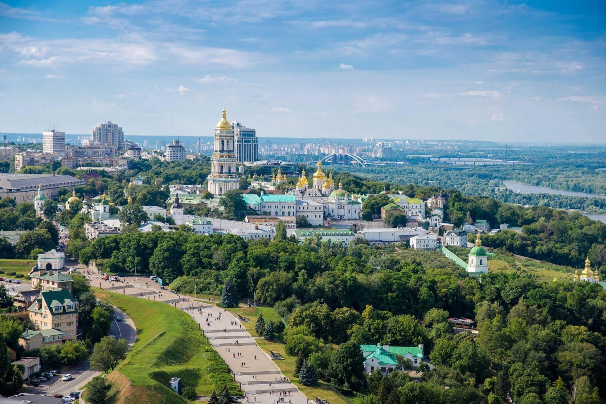
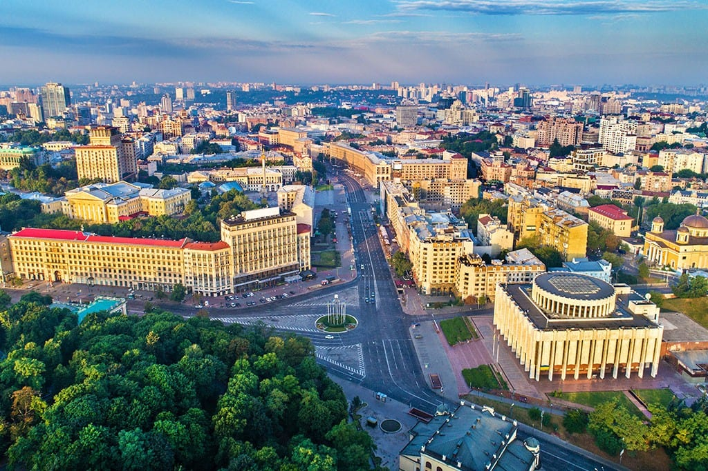
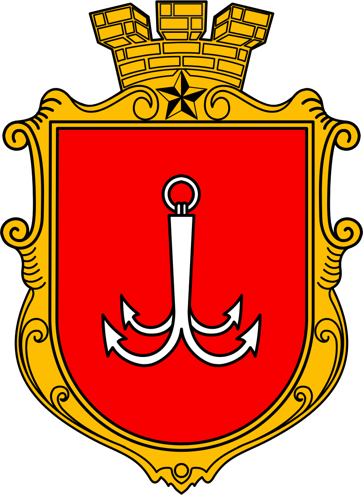
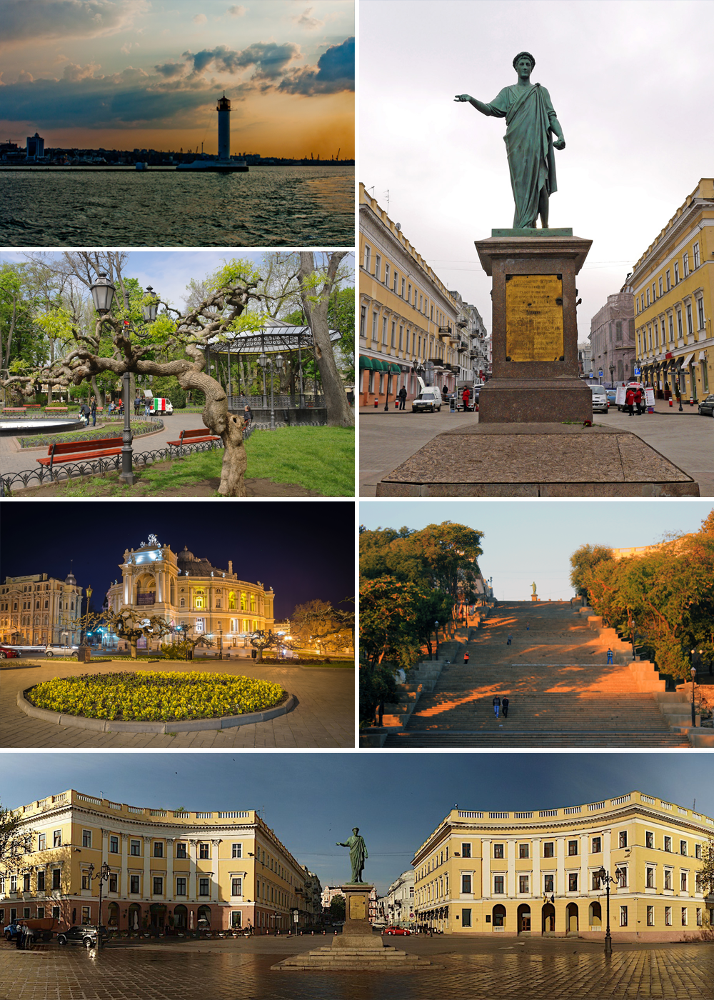
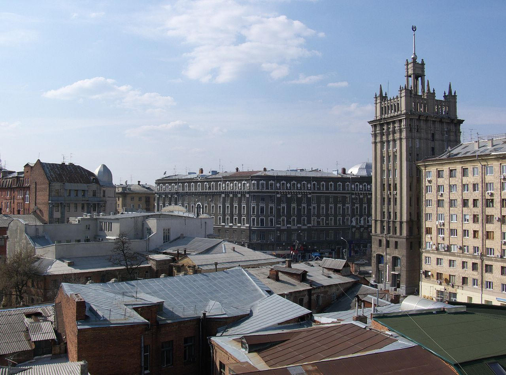

צבא אוקראינה
תיירות באוקראינה
אוכל
היסטוריה
דף ראשי
|
צבא אוקראינה
|
תיירות באוקראינה
|
אוכל
|
היסטוריה
|
דף ראשי
|
| קייב: | ||
| קייב היא עיר הבירה והעיר הגדולה ביותר של אוקראינה. העיר נמצאת בצפון המדינה על גדות הנהר דנייפר, שחוצה אותה לאורכה. בעבר שימשה העיר כבירת רוס של קייב, המדינה הראשונה של העמים הסלאבים. בשנת 2013 חיו בה באופן רשמי 2,847,200 תושבים אך ישנן הערכות שבפועל האוכלוסייה גדולה יותר. מבחינה מנהלית העירייה מנותקת ממחוז קייב שסובב אותה.קייב היא מוקד חשוב של תעשייה, מדע, השכלה ותרבות במזרח אירופה , ובית למספר רב של תעשיות היי טק, מוסדות להשכלה גבוהה ומוקדים היסטוריים בעלי חשיבות עולמית. בעיר יש תשתית רחבה ומאוד מפותחת של תחבורה אזרחית , במיוחד מערכת הרכבת התחתית של העיר הנקראת קייבסקיי מטרופוליטן. |  |  |
| קישור לדף ויקיפדיה של קייב | ||
| אודסה: | ||
| אודסה היא עיר נמל אוקראינית לחוף הים השחור, ומרכז מחוז אודסה. אוכלוסייתהּ מונה כ-1,010,783 נפש (נכון ל-2017), ובכך היא העיר השלישית בגודלהּ (מבחינת האוכלוסייה) באוקראינה, אחרי קייב וחרקוב. באודסה נמל הים המסחרי הגדול ביותר באוקראינה והיא מהווה עיר מרכזית בתחומי מסחר, תעשייה, תיירות ומדע. במאה ה-19 הייתה אודסה העיר השלישית בגודלה גם באימפריה הרוסית, אחרי מוסקבה וסנקט פטרבורג. בהיסטוריה האדריכלית שלהּ השפעה של הסגנונונות הצרפתיים והאיטלקיים, כמו הבארוק, הרוקוקו והגותי, שהיו נפוצים יותר במערב אירופה. ב-2023 העיר הוכרזה כאתר מורשת עולמית של אונסק"ו |  |  |
| קישור לדף ויקיפדיה של אודסה | ||
| חרקוב: | ||
| היא העיר השנייה בגודלה באוקראינה, אחרי קייב, הבירה. חרקוב היא מרכז מחוז חרקוב, ומצויה בצפון-מזרח אוקראינה; ב-2010 היו בה כ-1,449,000 נפש. חרקוב היא אחד ממרכזי התעשייה, התרבות, החינוך וההשכלה החשובים של אוקראינה. אתרים חשובים: כיכר החרות - לשעבר כיכר דזרז'ינסקי, אחת הכיכרות הגדולות בעולם. פארק מקסים גורקי - ראשיתו בסוף המאה ה-19. בשנת 1938 נקרא על שמו של הסופר מקסים גורקי שנפטר שנתיים לפני כן. קתדרלת אוספנסקי - נבנתה בסוף המאה ה-18 בסגנון הבארוק הרוסי. המגדל שלה מתנשא לגובה של כ-90 מטר. אנדרטת טאראס שבצ'נקו - אנדרטה לזכרו של הצייר והמשורר האוקראיני בן המאה ה-19. בנין "התעשייה הממלכתית" גוספרום - מכונה "דרז'פרום" באוקראינית. נמצא בכיכר החירות. בית הכנסת כורל - נבנה בשנת 1913. בית הכנסת הגדול ביותר בעיר |  | |
| קישור לדף ויקיפדיה של חרקוב | ||